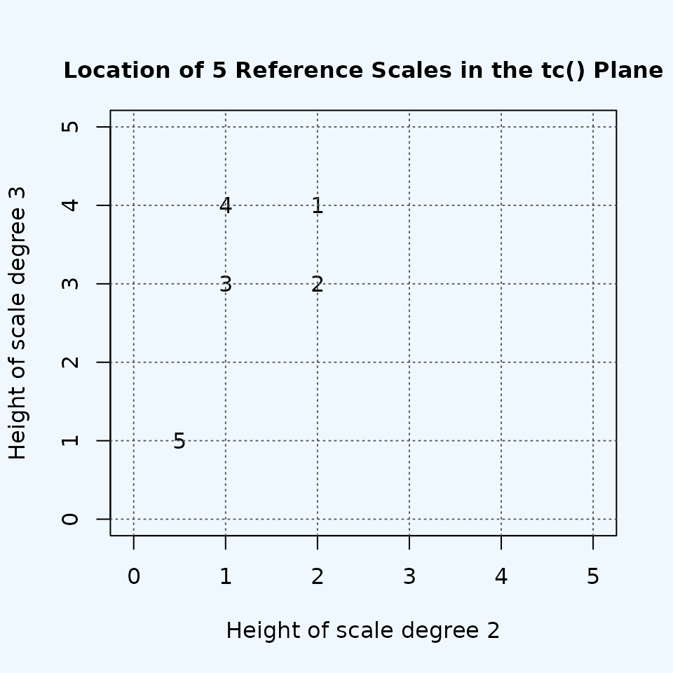
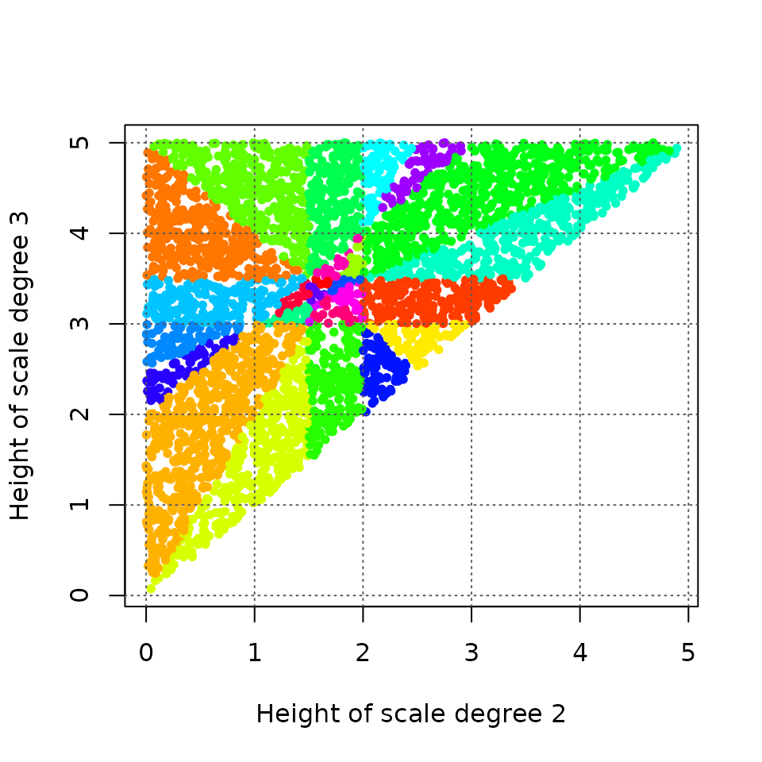
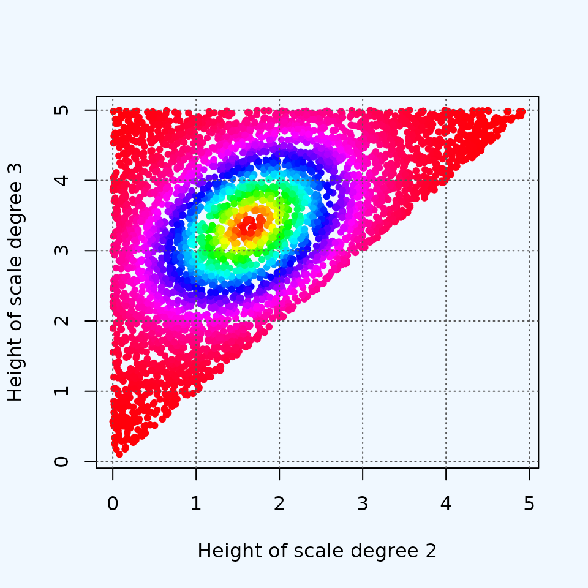

visualizing_higher_dimensions
Source:vignettes/visualizing_higher_dimensions.Rmd
visualizing_higher_dimensions.Rmd“To deal with hyper-planes in a 14-dimensional space, visualize a 3-D space and say ‘fourteen’ to yourself very loudly. Everyone does it.”
— Geoffrey Hinton (Lecture 2, Slide 16 from his 2012 Coursera course Neural Networks for Machine Learning)
Introduction
One of the major difficulties in understanding the geometries of
Modal Color Theory is the fact that they usually involve more than three
dimensions. The important case of seven-note scales involves a
hyperplane arrangement in six dimensions, and generally
n-note scales must be modeled in n-1
dimensions. The purpose of this vignette is to show how we can use
musicMCT to explore the geometries by visualizing cross-sections of
them, even though we can’t visualize an entire space at once.
The strategy that we’re going to use to explore heptachordal scale space is inspired by the venerable practice of building scales by combining two tetrachords. This practice is recorded in ancient Greek music theory and forms an important part of the theory of Arabic maqamat. I should stress, though, that this vignette is inspired by those theories, not an attempt to explain or reformulate them. I’m not an expert in either subject, and a maqam is not simply a scale in the elementary sense modeled by Modal Color Theory. I do suspect that part of the appeal of tetrachordal thinking is the way that it simplifies the range of possibilities that a musician must consider when using a scale: that simplification is a point of commonality between the visualization we’re about to do and the actual musical practices of Ancient Greek and Arabic classical musics (to the extent I understand them). I’d like to think that this commonality might be enough to allow MCT’s mathematical model to enrich our understanding of these theories, but for this vignette our goal is simply the technical problem of simplifying high-dimensional spaces.
Seven Notes, Tetrachords, and Two Dimensions
Our initial approach will be to restrict our attention to seven-note scales that can be built from two tetrachords with the following structure:
- The higher tetrachord is an exact transposition of the lower tetrachord up by 7 semitones.
- The lower tetrachord has a fixed first pitch of 0 and a fixed final pitch of 5.
- Thus the last pitch of the higher tetrachord is exactly an octave above the first pitch of the lower.
- The middle two pitches of the lower tetrachord are freely variable, as long as they stay in the right order. (That is, they must be above 0, less than 5, and the second pitch must be lower than the third pitch.)
Transpositional combination of this sort is easy to achieve in musicMCT with the function [tc()]. Let’s see how the normal 12-equal major scale can be derived as the transpositional combination of an (0, 2, 4, 5) tetrachord at a perfect fifth:
This structure is useful because it fixes most of the pitches in the scale, allowing only the values of the middle two notes in the lower tetrachord to vary freely. (The middle pitches of the upper tetrachord must match the lower one, so they are completely determined by our decisions about scale degrees 2 and 3.) This means that all scales with this structure live in a two-dimensional subspace of the overall heptachord geometry: the two dimensions of the subspace correspond simply to our choices for the values of scale degree 2 and 3. Let’s define a function that takes in a pair of choices for the variable scale degrees (i.e. a “genus” in Ancient Greek theory) and returns an entire scale:
scale_from_genus <- function(genus) {
sd2 <- genus[1]
sd3 <- genus[2]
tc(c(0, sd2, sd3, 5), c(0, 7))
}Since the space of such scale is only two dimensional, it will be
easy to visualize on a normal x-y plot. The space is a planar slice
through the complete 6-d heptachord space. Since the perfectly even
seven-note scale (7-tone equal temperament) cannot be
constructed by scale_from_genus(), it does not lie on the
plane that we will visualize. Recall that every “hue” in MCT is a ray
that emanates outward from the perfectly even scale. The plane that
we’re visualizing will intersect many of those hues, but no hue lies
entirely within the plane. Every hue that we visualize will therefore be
represented by just a single point in our plot. For instance, the
12-equal major scale will be a point on our plot (with x coordinate 2
for its \(\hat{2}\) and y coordinate 4
for its \(\hat{3}\)). This single point
belongs to the hue of “well-formed” major scales, i.e. the ones that
have the meantone structure of being generated by a chain of fifths. If
we wanted to visualize other specific points on that hue, such as the
Pythagorean tuning of the major scale, we would need to redefine our
scale_from_genus() function to use a different interval of
transpositional combination. That is, instead of
sd2 <- runif(1, 0, 2.5)
sd3 <- runif(1, 2.5, 5)
tc(c(0, sd2, sd3, 5), c(0, 7))
#> [1] 0.0000000 0.2018753 4.5858326 5.0000000 7.0000000 7.2018753 11.5858326we would need
tc(c(0, sd2, sd3, j(4)), c(0, j(5)))
#> [1] 0.0000000 0.2018753 4.5858326 4.9804500 7.0195500 7.2214254 11.6053826
# (Note the use of j() to define acoustically pure fourth and fifth.)This would crete a plane of scales that’s parallel to and just slightly offset from the plane that we will visualize. The points on the planes would correlate to each other one-to-one, as slight variations in the “saturation” of the same hues.
Let’s plot our first few scales on this plane. There are several relatively familiar scales that all have the desired tetrachordal structure:
ionian <- scale_from_genus(c(2, 4))
dorian <- scale_from_genus(c(2, 3))
phrygian <- scale_from_genus(c(1, 3))
double_harmonic <- scale_from_genus(c(1, 4))
enharmonic <- scale_from_genus(c(.5, 1))
demo_scales <- rbind(ionian, dorian, phrygian, double_harmonic, enharmonic)
plot(demo_scales[, 2], demo_scales[, 3], pch=sapply(1:5, toString),
xlab="Height of scale degree 2", xlim=c(-.05, 5.05),
ylab="Height of scale degree 3", ylim=c(-.01, 5.01))
grid(col="gray35")
The scales are marked by numbers in the order that we defined them: the ionian scale is “1”, dorian “2”, and so on. It will be useful to keep these points in mind as landmarks while we populate the space with more scales.
colorfunc <- function(x) tanh(x-min(x))
numpoints <- 4000
xs <- runif(numpoints, 0, 5)
ys <- runif(numpoints, 0, 5)
inputs <- rbind(xs, ys)
inputs <- apply(inputs, 2, sort)
sets <- apply(inputs, 2, scale_from_genus)
ratios <- apply(sets, 2, ratio)
par(bg='aliceblue')
plot(sets[2,], sets[3,], col=hsv(colorfunc(ratios)), pch=20,
xlab="Height of scale degree 2",
ylab="Height of scale degree 3")
grid(col="gray35")
all_signvecs <- apply(sets, 2, signvector)
all_signvecs_str <- apply(all_signvecs, 2, toString)
unique_signvecs <- unique(all_signvecs_str)
signvec_id <- function(signvec) which(unique_signvecs==signvec)
all_signvec_ids <- sapply(all_signvecs_str, signvec_id)
all_signvec_ids <- all_signvec_ids/max(all_signvec_ids)
plot(sets[2,], sets[3,], col=hsv(all_signvec_ids), pch=20,
xlab="Height of scale degree 2",
ylab="Height of scale degree 3")
grid(col="gray35")
numpoints <- 4000
xs <- runif(numpoints, 0, 5)
ys <- runif(numpoints, 0, 5)
inputs <- rbind(xs, ys)
inputs <- apply(inputs, 2, sort)
sets <- apply(inputs, 2, scale_from_genus)
evs <- apply(sets, 2, evenness)
par(bg='aliceblue')
plot(sets[2,], sets[3,], col=hsv(h=colorfunc(evs)), pch=20,
xlab="Height of scale degree 2",
ylab="Height of scale degree 3")
grid(col="gray35")